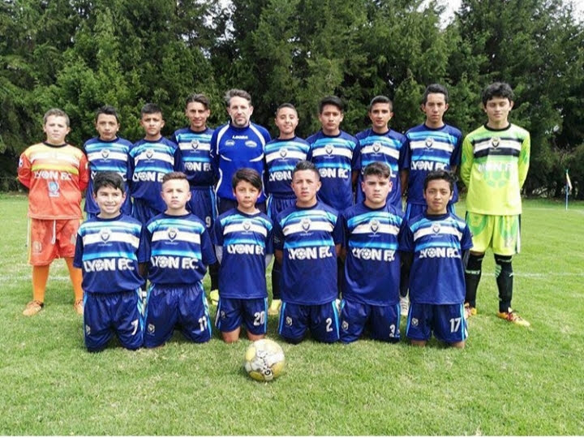
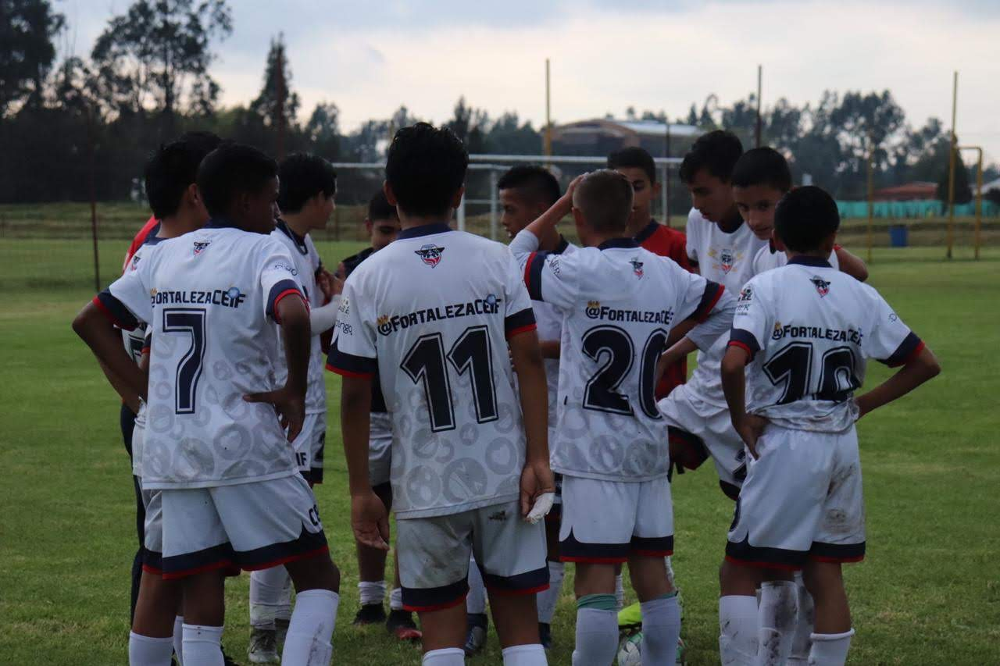
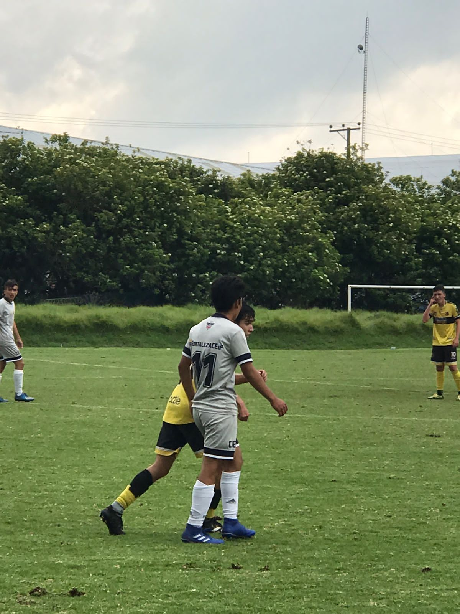

Estudiante
Ingeniero de Sistemas y Computación
Universidad de los Andes
Mi nombre es Juan Pablo Reyes Romero, y soy estudiante de pregrado de Ingeniería de Sistemas y Computación en la Universidad de los Andes en Bogotá, Colombia. Sin embargo, si desde pequeño me hubiesen preguntado por mi futuro, estoy seguro de que no habria respondido lo mismo. Desde muy péqueño me volvi un apasionado por el futbol, es mas, siempre quise llegar a ser profesional, sin embargoa mis 17 años me di cuenta de que ese sueño no se lograria tan facil, se requeria mas de lo que apenas tenia en ese entonces...
Desde los 5 años empece a jugar futbol, al inicio lo hice porque mis papas me metieron en el equipo de futbol de mi colegio. Siendo franco, yo no era para nada bueno, asi que termine por ser un chico que siempre queria jugar, pero que no destacaba dadas mis pocas habilidades. Todo fue hasta que cumpli 10, y para ese momento mejore bastante, lo suficiente como para que el profe de la categoria superior a la mia me dijera a mi y a otros chicos que entrenaramos con el. Desde ese momento mejore mas y mas, hasta que luego por mi gran desempeño, mi papa me ingreso a la que seria mi primer escuela de futbol; Lyon F.C.
Desde finales de 2016 hasta inicios de 2018 estuve alli, aprendi demasiado, lo unico malo fue que ya que habian tan pocos chicos, solamente habia una categoria para mi edad en ese entonces (11-12), que era sub-15, lo que era demasiado para mi en ese entonces, por lo que decidi irme a un mejor club en el que me pudiera desarrollar adecuadamente, este seria el club de mi vida, Fortaleza CEIF.
 Fue en Fortaleza que me forjé como jugador, lo que al final me llevo a conseguir en poco tiempo mi mejor nivel en mi vida, no obstante, tuve dos lesiones que me alejaron por bastante tiempo de las canchas, lo que causo que mi juego se viera afectado por completo, definiendo de ese modo lo que seria el final de una linda etapa en mi vida.
Si deseas contactarme para algun torneo de fuitbolistas pensionados, por favor contactame :c